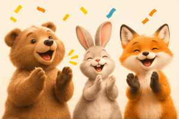

Этап 1 · Задание 1 из 10
Найди корабль
Первый этап пройден!
А теперь попробуем найти транспорт среди четырёх картинок.

Ура! Ты всё нашёл!
Зверята аплодируют тебе!
А теперь попробуем найти транспорт среди четырёх картинок.

Зверята аплодируют тебе!